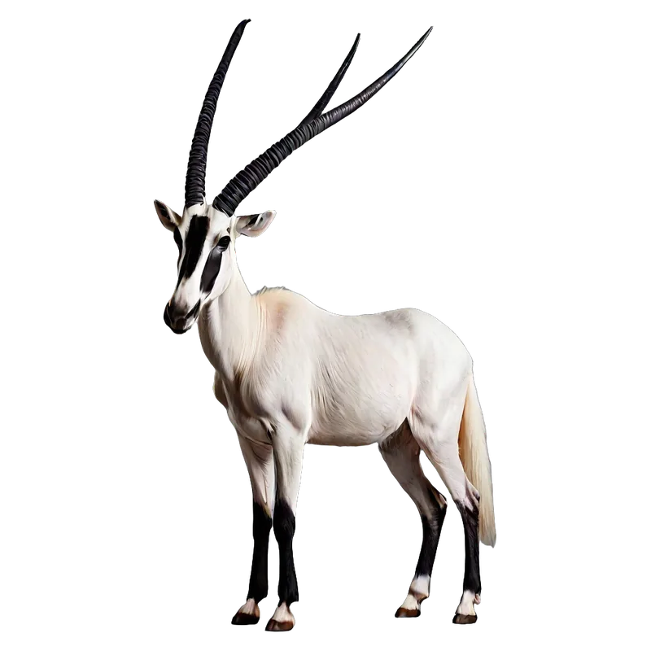
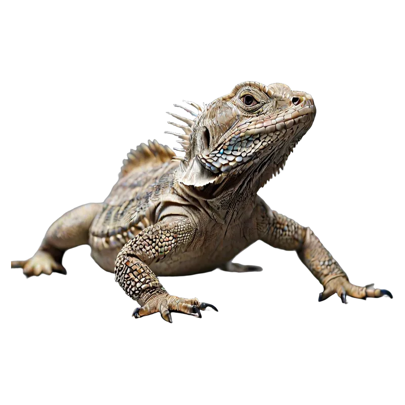
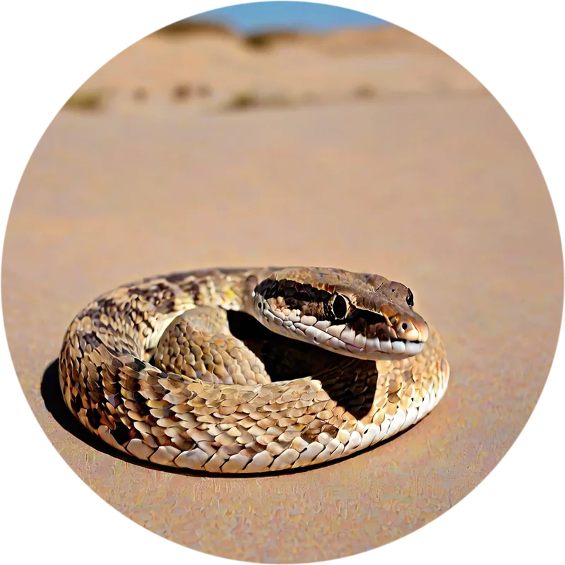
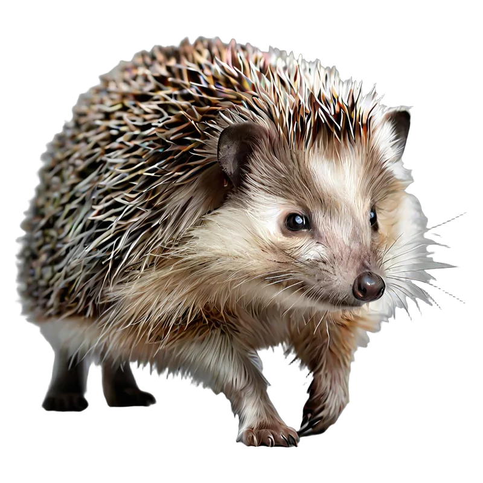
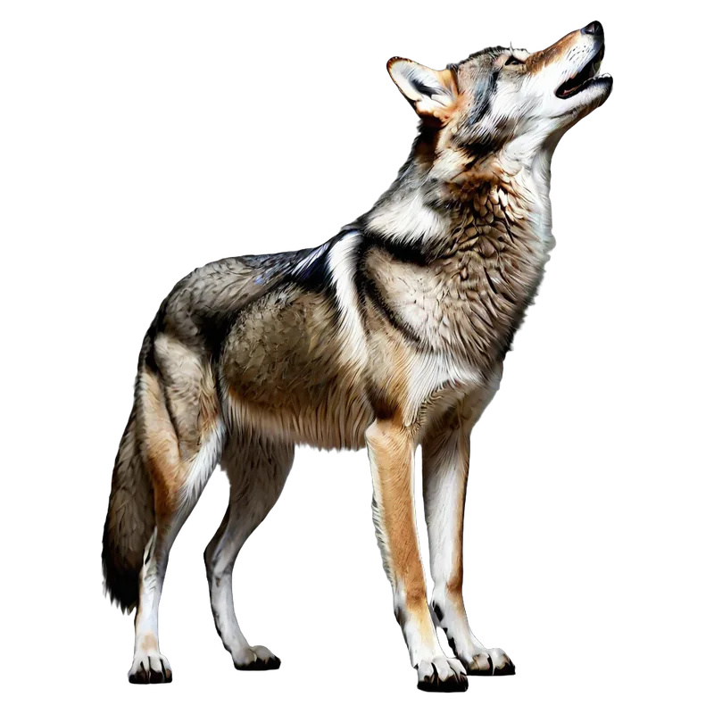
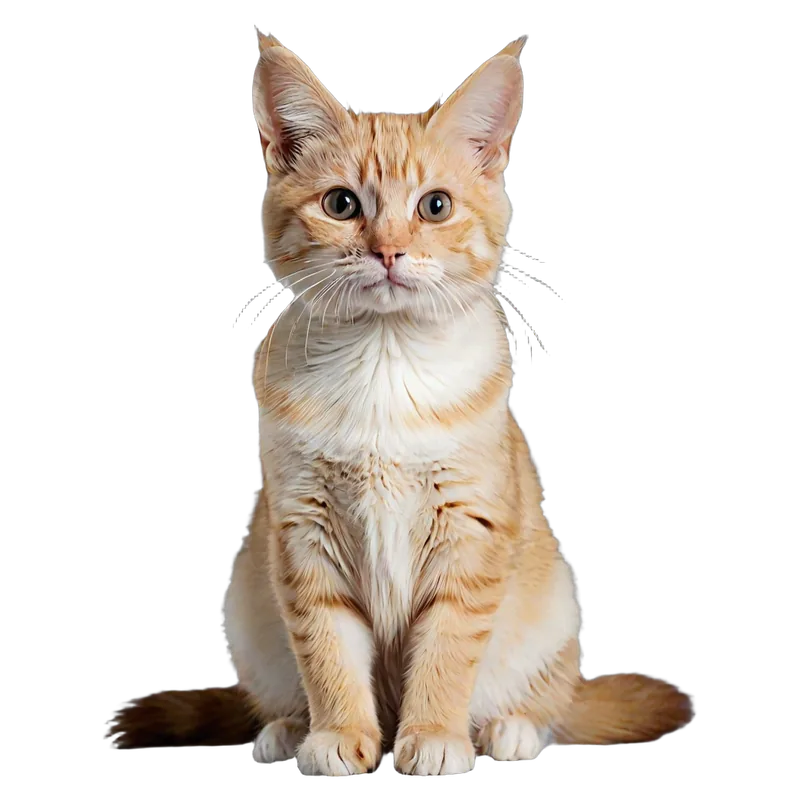
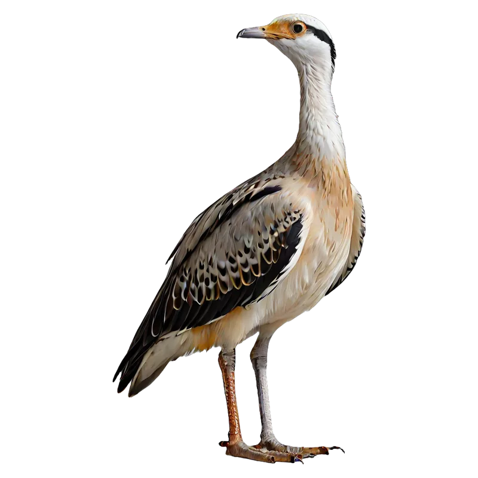
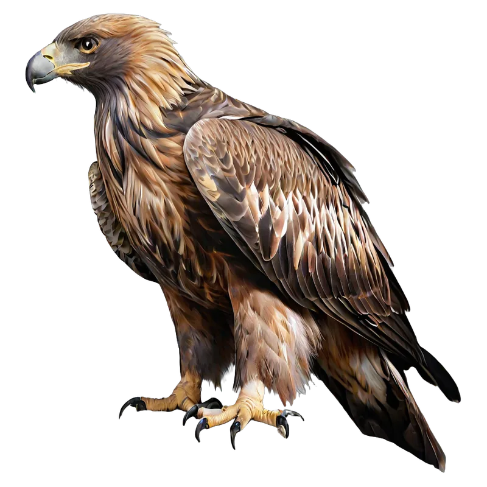
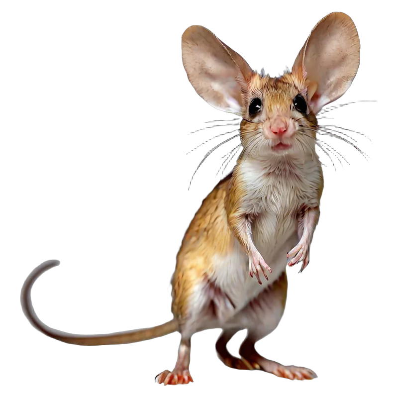
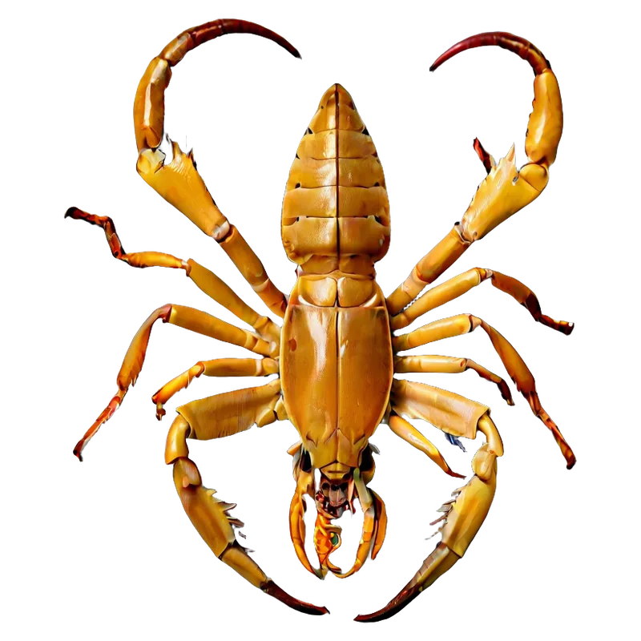

كِتَابِي الْأَوَّل
حَيَوَانَاتُ
الصَّحْرَاء
الصَّحْرَاء

صِغَارُ الضَّاد
14-desert-animals · page 1 · front cover
جَمَل
14-desert-animals · page 2 · item 01
مَهَاة

14-desert-animals · page 3 · item 02
فَنَك
14-desert-animals · page 4 · item 03
ضَبّ

14-desert-animals · page 5 · item 04
أَفْعَى

14-desert-animals · page 6 · item 05
قُنْفُذ

14-desert-animals · page 7 · item 06
ذِئْب

14-desert-animals · page 8 · item 07
قِطُّ الرِّمَال

14-desert-animals · page 9 · item 08
حُبَارَى

14-desert-animals · page 10 · item 09
نَسْر

14-desert-animals · page 11 · item 10
جَرْبُوع

14-desert-animals · page 12 · item 11
عَقْرَب

14-desert-animals · page 13 · item 12
أَيْنَ الْقُنْفُذُ؟
14-desert-animals · page 14 · question 1
أَيْنَ الْجَمَلُ؟
14-desert-animals · page 15 · question 2
أَيْنَ الذِّئْبُ؟
14-desert-animals · page 16 · question 3
أَيْنَ الْجَرْبُوعُ؟
14-desert-animals · page 17 · question 4
أَيْنَ الْعَقْرَبُ؟
14-desert-animals · page 18 · question 5
كُلُّهَا مَعًا!
مَهَاة
ضَبّ
أَفْعَى
قُنْفُذ
ذِئْب
قِطُّ الرِّمَال
حُبَارَى
نَسْر
جَرْبُوع
عَقْرَب
14-desert-animals · page 19 · all together
صِغَارُ الضَّاد
يتعرّف طفلك على اثني عشر حيوانًا من حيوانات الصحراء بصور حقيقية واضحة.
من عمر سنة إلى ٣ سنوات
ISBN / BARCODEprinter places it here
14-desert-animals · page 20 · back cover